This is the first lecture of the course. It gives you a map of the cell that every later lecture uses.
After this lecture you can:
Name the main compartments of an animal cell and say in one sentence what each one does.
Explain topology: which spaces are on the cytosol side of a membrane and which are on the lumen side.
Give the size and number of the things inside a cell (ions, proteins, ribosomes, organelles, cells) to within a factor of ten.
Choose a model system (yeast, a cell line such as HeLa, an organoid) for a question, and say what it cannot tell you.
The course map: from molecules to cells
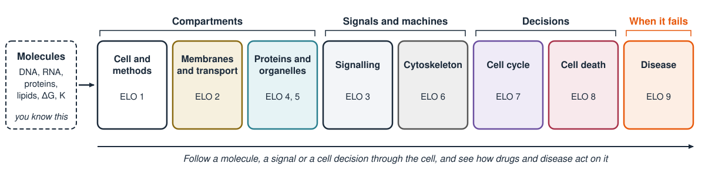
You already think in molecules: DNA, proteins, enzymes, ΔG. This course moves you one level up: to compartments (where things are), machines (what moves and signals) and decisions (divide, move or die), and to disease when these go wrong.
How the exam works
Written exam
one section for each ELO 1–9
To pass
at least 60 % correct in every section; all nine ELOs must be passed
VG
each section has one VG question; VG on at least 5 of the 9
Partly passed?
if you pass at least 6 ELOs, you can take an oral exam on the others, or retake the full exam
The question: how does one small drop do everything at once?
A cultured animal cell holds about 2 picolitres of water, and in it:
billions of protein molecules, many thousands of different kinds,
enzymes that make fats next to enzymes that burn them,
enzymes that digest proteins at pH 5, in a cell whose cytosol is pH 7.2,
DNA that must be copied once per division and never digested.
How does the cell keep incompatible chemistry apart, and still get every molecule to the place where it is needed?
many: ER, Golgi, endosomes, lysosomes, mitochondria, …
Typical volume
~1 µm³
~1000–4000 µm³ (about 1000× larger)
A map of the animal cell
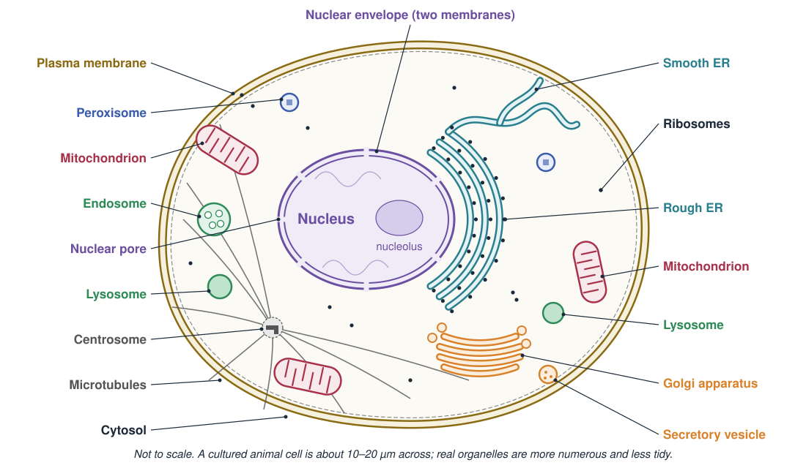
Explore a real HeLa cell
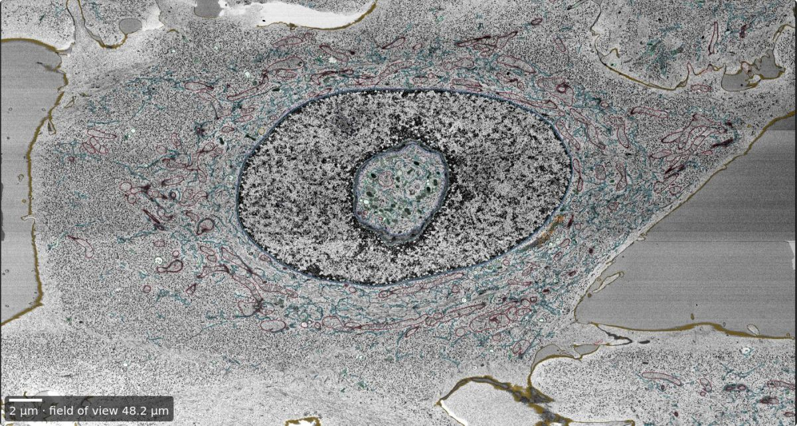
One slice through a real HeLa cell (electron microscopy, 48 × 26 µm), with the organelles outlined in the same colours as the map. Open the cell explorer: zoom in, tap an organelle to read what it is, then try Find the organelle.
What each compartment does
Compartment
Main job
Share of cell volume*
More in
Cytosol
protein synthesis, most metabolism, signalling
~50 %
throughout
Nucleus
stores and reads DNA; makes ribosomes (nucleolus)
~5–10 %
protein sorting; cell cycle
ER
makes membrane and secreted proteins, lipids; stores Ca²⁺
~10–15 %
the ER
Golgi apparatus
adds sugars, sorts proteins
~2–5 %
Golgi and secretion
Endosomes, lysosomes
sort what was taken in; digest at pH ~5
~1–2 %
endocytosis and lysosomes
Mitochondria
ATP by oxidative phosphorylation; start apoptosis
~20 % in a liver cell
mitochondria; apoptosis
Peroxisomes
oxidise fatty acids; break down H₂O₂
~1 %
organelles compared
*Rough values for a liver cell. They change a lot between cell types: a pancreas cell that secretes enzymes is full of ER, a fat cell is mostly a lipid droplet.
Two sides of every membrane: topology
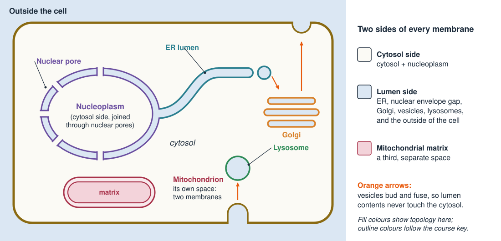
Inside-out logic: a protein keeps its orientation
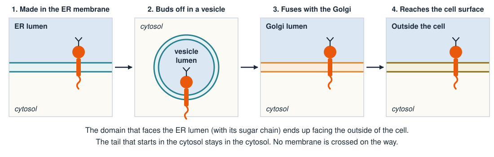
The part of a protein that is in the ER lumen ends up outside the cell.
This is why sugar chains (added in the ER and Golgi lumen) are found on the outer surface of the cell, and why receptors have their binding site outside.
The scale ladder: from ion to cell
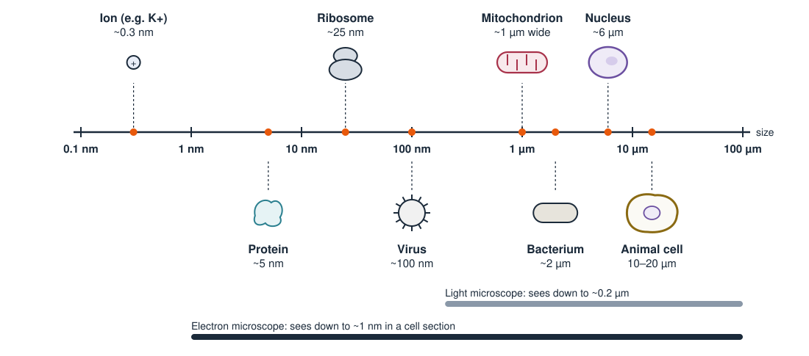
Each step on the axis is a factor of 10. A cell is about 50,000× wider than an ion and about 3000× wider than a protein.
Numbers worth knowing
Quantity
Typical value (order of magnitude)
Diameter of a cultured animal cell
10–20 µm
Volume of a mammalian cell
~1–4 pL (1000–4000 µm³)
Cell mass that is water / protein
~70 % / ~15–20 %
Protein molecules per cell
10⁹–10¹⁰ (about 10,000 different kinds)
Ribosomes per cell
~10⁶–10⁷
A protein diffuses across a cell (10 µm)
a few seconds
A small molecule diffuses across a cell
~0.1 s
A protein diffuses 1 m (down a long nerve axon)
hundreds of years, so the cell uses motors
Cells in a human body
~3 × 10¹³
Rough values of the kind collected in BioNumbers (bionumbers.hms.harvard.edu) and Cell Biology by the Numbers (Milo and Phillips). Diffusion time: t \approx x^2 / 6D with D \approx 5–10\ \mu\text{m}^2/\text{s} for a protein in cytoplasm.
How do we know? Electron microscopy revealed the compartments
Light microscopy (from the 1600s) showed cells and nuclei, but nothing smaller than ~0.2 µm.
1940s–1950s: the electron microscope and thin sections showed the ER, ribosomes, Golgi stacks and the inner structure of mitochondria.
At the same time, cell fractionation (breaking cells and separating parts by centrifugation) showed what each part does, for example lysosomes full of digestive enzymes.
Nobel Prize 1974: Claude, de Duve and Palade.
Lesson: one method shows where; another shows what it does. You need both.
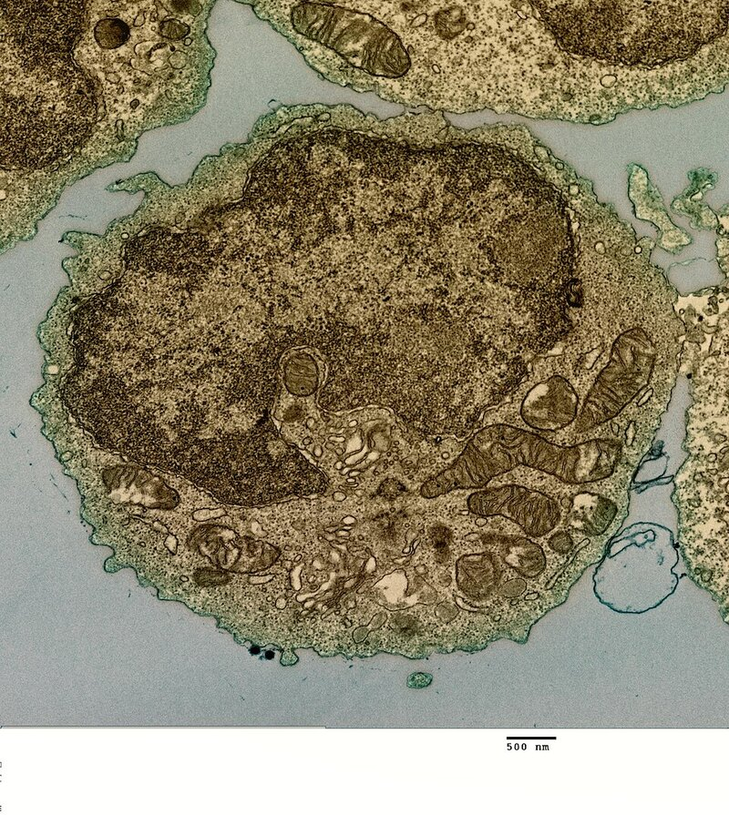
Transmission electron micrograph of a human B lymphocyte. Large nucleus with dark chromatin; mitochondria with folded inner membranes in the cytoplasm. Scale bar 500 nm.
Model systems: choose the simplest system that can answer the question
System
Good for
Cannot tell you
Bacteria (E. coli)
fast genetics, basic machines
anything about organelles
Budding yeast (S. cerevisiae)
eukaryote; divides in ~90 min; easy genetics
how tissues and animals behave
Human cell lines (HeLa, HEK293, …)
human proteins; easy to image and perturb
normal behaviour: most are cancer cells grown on plastic
Organoids
3D tissue from stem cells, even from a patient
blood supply, immune system, whole body
Mice
whole organism
human biology exactly; slow, costly, ethics
Yeast genetics found the genes for the cell cycle (Nobel 2001), vesicle traffic (2013) and autophagy (2016).
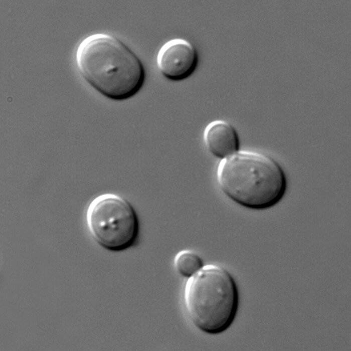
Budding yeast, Saccharomyces cerevisiae (DIC microscopy). Small buds are daughter cells growing out of the mother cells.
Cell lines: HeLa, the first human cells that never stopped dividing
Normal human cells divide only about 40–60 times in culture, then stop.
A cell line divides without limit. Most come from tumours.
HeLa (1951) came from the cervical tumour of Henrietta Lacks. It was the first human cell line.
HeLa cells carry human papillomavirus 18 (HPV-18). Viral proteins switch off two brakes on cell division (you meet them in the cell-cycle and cancer lectures).
HeLa is not a normal cell: around 76–80 chromosomes instead of 46, and the number varies. And HeLa grows so well that it has contaminated many other cell lines, so labs now check the identity of their cells with a DNA test.
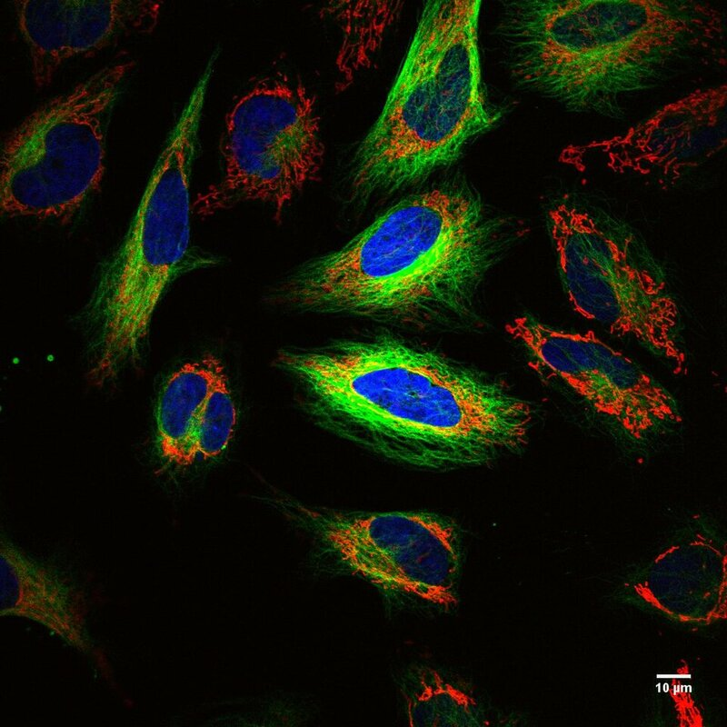
Living HeLa cells. Blue: nucleus. Green: microtubules. Red: mitochondria. Scale bar 10 µm.
Organoids: tissue in a dish
An organoid is a small 3D structure that grows from stem cells in a gel, with the right growth factors.
The cells organise themselves: an intestinal organoid forms crypts and a lumen, with several cell types, like the real gut lining.
Organoids can be grown from one patient’s biopsy, so you can test drugs on that patient’s own cells.
Example: in cystic fibrosis, a patient’s intestinal organoids swell when a drug restores the faulty chloride channel (CFTR). The test helps choose a drug for that patient.
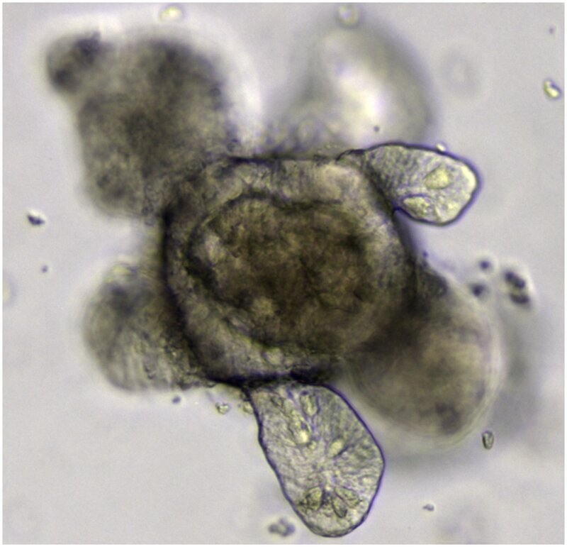
Intestinal organoid grown from Lgr5⁺ stem cells. The buds are crypt-like domains around a central lumen.
Why it matters: HeLa cells changed medicine
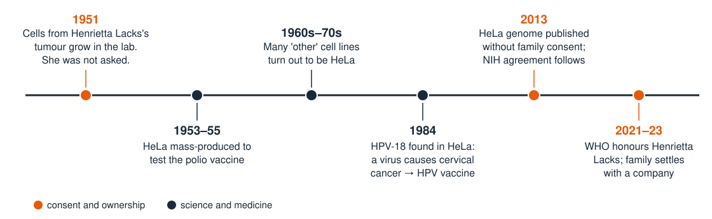
Polio vaccine: poliovirus grows in HeLa, so HeLa was mass-produced to test the Salk vaccine (1953–55).
HPV and cervical cancer: HPV-18 DNA in HeLa helped show that a virus causes cervical cancer (Nobel 2008), which led to the HPV vaccine.
Drug screening: cell lines like HeLa are the first test for thousands of drug candidates: does the compound kill cells, reach its target, change an organelle?
Why it matters: consent, then and now
In 1951 Henrietta Lacks was not asked whether her cells could be used. This was common practice at the time. She died the same year, aged 31.
Her family learned about HeLa decades later. Companies sold HeLa cells; the family received nothing.
2013: the HeLa genome was published without the family’s consent. It also says something about her relatives’ DNA. The US National Institutes of Health then agreed with the family on controlled access, with family members on the committee.
Today, in Sweden: research on human tissue needs ethical approval and, as a rule, informed consent. Samples in biobanks are protected by law.
Ask yourself: who should decide how cells from a patient are used, and who should benefit?
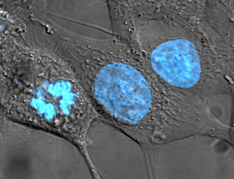
HeLa cells, DNA stained with the blue dye Hoechst 33258.
Summary
A eukaryotic cell is divided by membranes into compartments, each with its own chemistry and job: nucleus, ER, Golgi, endosomes and lysosomes, mitochondria, peroxisomes, and the cytosol between them.
Every membrane has two sides. The cytosol and nucleoplasm form one side; the lumen of the ER, Golgi, vesicles and lysosomes is topologically outside the cell. Mitochondria have a third space.
Sizes and numbers: protein ~5 nm, ribosome ~25 nm, cell 10–20 µm; 10⁹–10¹⁰ proteins per cell; diffusion is fast over a cell but useless over long distances.
We know this from microscopy (where) and fractionation (what), and we study cells in model systems (yeast, cell lines such as HeLa, organoids), each with its limits.
Read more (optional): Alberts et al., Molecular Biology of the Cell, 7th ed., ch. 1 and ch. 12 (first section).